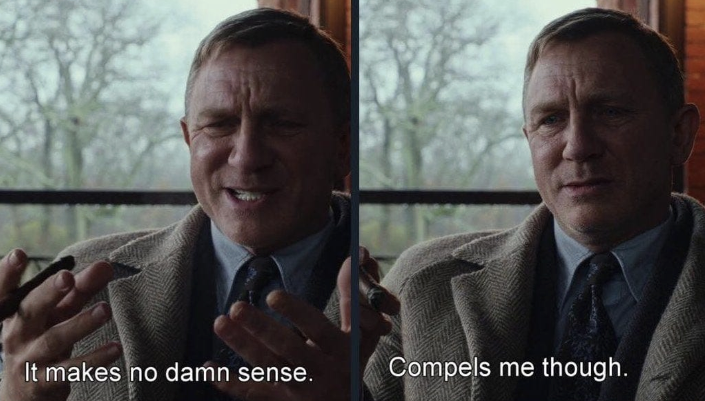

Cultural Sociology After the Credibility Revolution
How should we do cultural sociology after the credibility revolution?
A few years ago, this would not have been an alarming question. Work in cultural sociology was bifurcated between what we can call “cultural” and “cognitive” traditions (see Kaidesoja, Hyyryläinen, and Puustinen 2022), one focusing on the classic questions around meaning and cultural practices, while the other focusing on cognitive processes underlying human thinking and behavior.
However, despite clear differences in theory and question formulation, both of these traditions shared a relatively common attitude toward quantitative empirical work. Objects that we deemed culturally relevant were rarely framed in terms of treatments, counterfactuals, and causal estimands. Instead, culture was mainly invoked as an organizing force in social life: something that structures perception, facilitates certain practices over others, or stabilizes social action. In practice, this involved a tradition of empirical practice that prioritized model-based thinking: strategies aiming to map cultural structures via clusters, dimensions, or latent spaces.
This strategy makes sense, because it is typically dubious, or at least odd, to think that “culture” is something that operates as a manipulable treatment. We instead define culture through its role in a larger system: either as a force that, say, motivates people (Vaisey 2009) or something that changes in response to some social changes (Fishman and Lizardo 2013). It was rarely the case that these causal relations were really articulated as contrasts between well-defined counterfactual states.
The situation changed, however, with what is now commonly referred to as the credibility revolution, though the implications of this transformation are yet to be reckoned with in cultural sociology.
Across sociology and the social sciences more broadly, the empirical emphasis shifted toward counterfactual reasoning, in one form or another, at the expense of model-based thinking. Given the kind of questions cultural sociologists tend to ask or the kind of objects they tend to study, I think it is fair to think that this turn may obstruct—or have already obstructed—theoretically well-motivated empirical work, by narrowing what counts as “acceptable” evidence and diluting the model-based thinking that defines this research.
That may very well be true, but I believe that once this new standard is taken seriously, a serious question emerges for the study of culture. This question asks whether cultural processes can be meaningfully expressed in the language of potential outcomes. This is a contested issue, because many cultural theories involve forms of causation that are diffuse, cumulative, and (perhaps because of this very reason) open to being relatively vague. What does it mean to postulate a world where an actor did not acquire a particular schema? What could it mean to imagine the absence of “habitus,” “fields,” and “capital”? Such questions immediately point to a basic tension between how culture is typically theorized and how causal claims are currently expected to be formalized.
 |
|---|
| The “Effects” of Habitus |
Let me return to the initial question I posed: how should we do cultural sociology after the credibility revolution? I think we need important changes in our paradigm to greet this moment.
One suspicion I have heard repeatedly from people is that the tension is practically unresolvable because, well, we cannot “manipulate” culture. Seen this way, the pressure coming from the credibility revolution will either invalidate classic questions in cultural sociology since it is not really possible to answer them, or they will simply fundamentally change what it means to do cultural sociology tout court.
But I think the problem many people miss here is that the potential-outcomes framework does not really demand that cultural objects are manipulable in any literal sense. Instead, it demands that our questions involve intelligible comparisons between well-defined units. Put differently, it clarifies what, exactly, culture commits us to observe in the real world, and which contrasts must hold for that claim to be meaningful.
A useful illustration of this clarification role recently came from Kratz and Brüderl (2025), who defined the effects of aging as what would be observed if the same individuals aged under otherwise comparable conditions. What makes this paper particularly exemplary is that it shows, in quite a strong fashion, how counterfactual thinking might have a clarifying function for many classic questions in cultural sociology. That being said, even the authors themselves acknowledge that there is a bit of an “uneasiness” that stems from this strategy:
[viewing] the age–happiness relationship through a causal inference lens is subject to debate [… and that] age is not “manipulable” [11].
Nonetheless, as Kratz and Brüderl (2025) says, this is precisely the point.
Only when we put “the effect of aging” as a problem like this may we appreciate that our seemingly straightforward research questions actually hide many conceptual problems. The payoff is thus a clarification of what the claim would mean, which comparisons would justify it, and which assumptions are doing the real explanatory work. In that sense, cultural sociology can benefit from the credibility revolution not just as a tool for statistical design, but as a device for conceptual clarification.